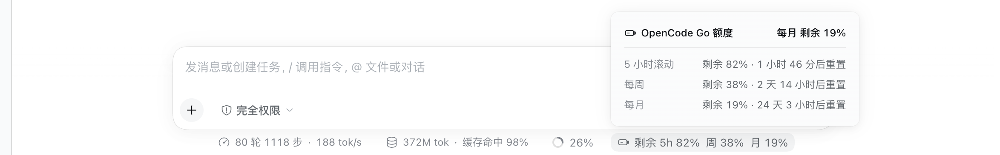

按 provider 判定
只有当前模型所属 provider 的 baseURL 指向 OpenCode Zen Go 时才显示；切到其它 provider 自动隐藏。
DeepSeek Harness · dsh bundle
在额度见底之前，先看见它。
OpenCode Go 的 5 小时滚动 / 每周 / 每月剩余额度，化作 dsh Web 输入框统计行里最安静的一枚 pill——一眼可见，细节点开才有。

llm-pi-ai 里已配好的 provider，不复制 key、不新增设置页。lib/，dsh plugin add 秒装即用。| 常见同类做法 | dsh-opencode-usage |
|---|---|
| 再造一个常驻悬浮卡 / 圆环 / 呼吸灯，占一块新位置 | 复用输入框已有的统计行，只多一枚 pill |
| 自带一套玻璃、渐变或霓虹皮肤 | 与内置「Token 用量」同一套面板 token 与皮肤 |
| 写死某个 key 引用名，或让你在面板里填 key / cookie | 跟随 llm-pi-ai 已配的 provider 与 apiKeyEnv，多账号 route 各自生效 |
| 显示「已用」，或给一个来路不明的孤立百分比 | 三档一律剩余量，chip / 面板 / 无障碍名称口径一致 |
| 接管 provider 路由、参与请求甚至计费 | 只读展示，不碰你的请求与账单 |
| 需要构建、构建授权或额外依赖 | 仓库自带 lib/，dsh plugin add 秒装即用 |
只有当前模型所属 provider 的 baseURL 指向 OpenCode Zen Go 时才显示；切到其它 provider 自动隐藏。
上游接口给的是已用百分比，host 半边归一化成剩余量；chip、详情面板、无障碍名称三处措辞一致。
与内置「Token 用量」同一套面板皮肤，逐档列出剩余百分比与重置倒计时，标题给出最紧的一档。
浏览器只访问同源 /api/opencode-usage；API key 由 host 侧 credentials 服务按 apiKeyEnv 解析。
作为 bundle 装进 web profile，仓库自带可运行的 lib/，安装不需要构建授权：
dsh plugin --profile web add github:ColorlessBoy/dsh-opencode-usage装好后重启 dsh web 并刷新页面。不启动也能先验证层已组合：dsh --profile web --dump-config 应出现 # == dsh-opencode-usage。
不接管 provider 路由、不复制 API key、不新增设置页或常驻悬浮卡：复用既有的 llm-pi-ai 配置与 credentials 凭据，只多一枚安静的 pill。
安装本插件后，输入框下方的统计行会多一枚电池图标 pill，常驻显示 5 小时滚动、每周、每月的剩余百分比；点开面板可以看到每一档的重置倒计时。
不会。插件按当前模型所属 provider 的 baseURL 判定，只有指向 opencode.ai/zen/go 的 route 才显示；切到 DeepSeek 官方、OpenRouter 等其它 provider 时自动隐藏，不会误报。
不需要。host 半边直接读 llm-pi-ai 里已经配好的 provider（baseURL / apiKeyEnv），API key 由 credentials 服务解析后只在 host 侧使用，浏览器拿不到。
一条命令安装，然后重启 dsh web 并刷新页面。仓库自带预构建的 lib/，安装时不需要构建授权。
页面每 15 秒轮询一次同源端点；host 侧成功的读数缓存 30 秒、失败的缓存 10 秒，并合并并发的上游请求，不会频繁打扰额度接口。
是。它专门读 OpenCode Go 订阅的官方额度接口（5 小时 / 每周 / 每月三档）；其它 provider 的余额或配额不在它的范围内。